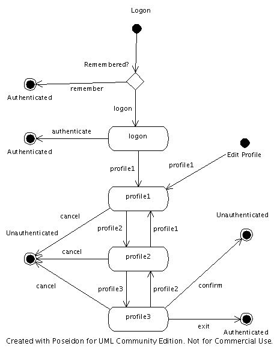

This dialog manages the user logon process that one might see in a typical
portal environment, including the following capabilities.
- Manual logon via entered username and password.
- (Optional) support for "remember me" cookies, and automatic
logon upon request, without reauthentication.
- User registration, with (optional) confirmation email exchange
prior to activation.
FIXME - email generation and confirmation handling not yet implemented.
- Alternate entry point for maintaining an existing user's profile.
See the Dialog class description for detailed
information about the entry and exit conditions that are relevant for this
dialog.
Logon Dialog Flow
